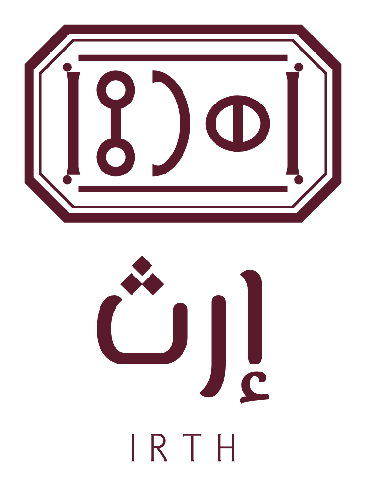
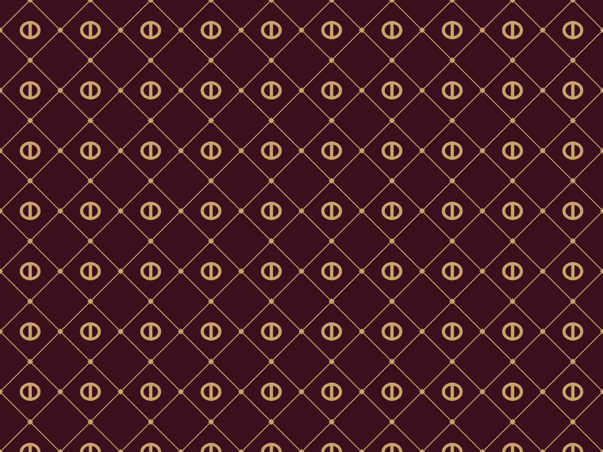
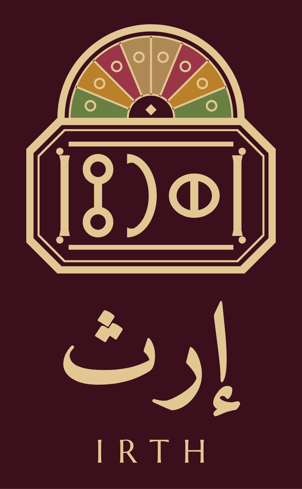

لم يتغيّر في هويتك شيء دون إذنك: الألوان والخطوط والنصوص وترتيب الدليل كما هي. وهذه ثلاثة قرارات تحدد ما يدخل الدليل من هذه الحزمة.
هل تحل محل المحاكيات المرسومة في أقسام الشعار والتغليف والمطبوعات والتطبيقات؟ الصفحة ٢٫٦ مطبّقة في هذه الحزمة مثالاً.
توصيتي: الاتجاه أ شعاراً رئيسياً، والاتجاه ج نقشاً للتغليف بدل نقش اللوح الحالي، والاتجاه ب لطبعات المواسم والشهادات وحدها. وهكذا تعمل بيوت الفخامة: شعار، ونقش، وشعار تراثي للمقام الأعلى.
الهاتف وواتساب للأعمال، والعنوان التفصيلي، والاسم التجاري المقيد ورقم السجل والرقم الضريبي. تظهر على البطاقات والورق الرسمي والفواتير، ولا تُكتب قبل تأكيدها: [يُستكمل].


